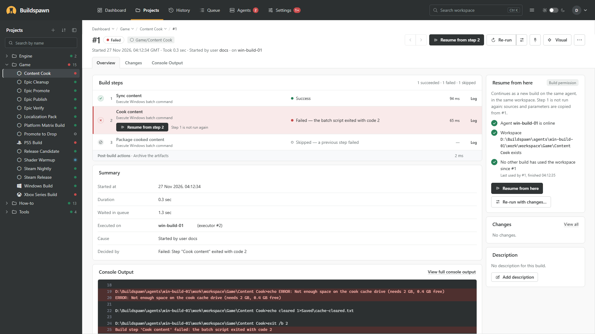
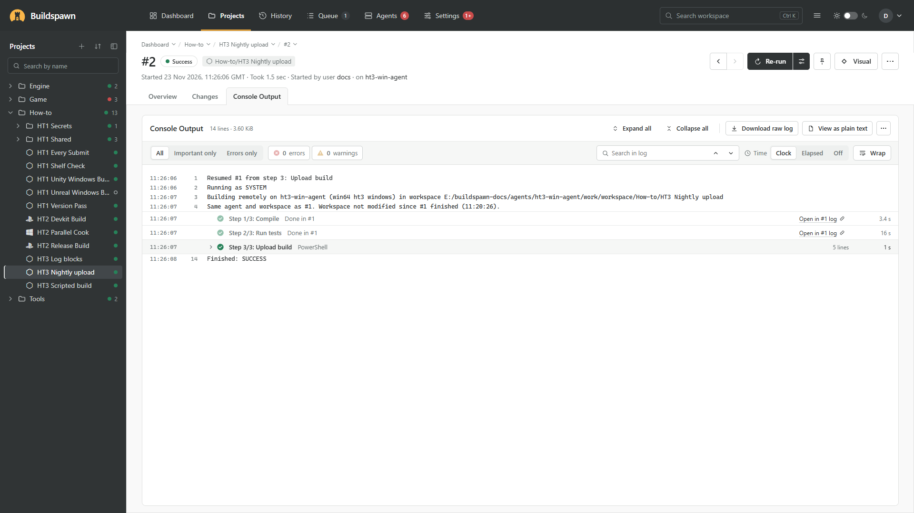

Resume a build
Pick up a failed or stopped build at the step that failed, on the same agent and in the same workspace, so the steps that already passed do not run again.
When to use it
Use it when a long build fails near the end: a two-hour cook, then a package step that fails because a file share was offline. You fix the cause outside the build, then resume. Resume runs the same code again. It does not pick up new changes. To build new changes, use Re-run with changes and choose Latest.
Resume, re-run or retry
| Tool | What it does | Use it when |
|---|---|---|
| Resume | A new build on the same agent and workspace, with no new sync, starting at a step you choose. The revision and parameters are copied from the failed build. | The problem was the machine or the network, and the work done so far is still good. |
| Re-run | A new build of the same sources and parameters from the start. | The workspace was used by another build, or you want to see whether a failure is flaky. |
| Retry | A step, or the whole build, runs again on its own after a failure. | A failure is flaky and you want Buildspawn to try again without you. |
Resume a failed build
- Open the failed build. Its page has a Resume from here card on the right. It checks three things and shows a tick for each: the agent is online, the workspace still exists, and no other build used the workspace since.
- Click Resume from step N at the top of the page. It is next to Re-run. The failed step in Build steps has the same button.
- A message says Resume queued. The new build starts, on the same agent, at step N.
Resume from an earlier step
- Click the button with the sliders beside Re-run. Its tooltip says Re-run with changes….
- Under Start from step, pick The beginning (a re-run), any step that passed, or the step marked Failed here. Later steps are not offered.
- Read the blue box. It sums up what will happen: the sources, the parameters, the agent and workspace, and which steps show as done.
- The button now says Resume from step N. Click it.
In the dialog, the sources, the agent and the clean checkout are locked for a resume, because it uses the sources, agent and workspace of the original.


When resume is not available
The Resume button is greyed out, the main button says Re-run from the start, and the card names the reason:
| Reason | What to do |
|---|---|
| Agent is offline, or The agent no longer exists | Bring the agent back online and try again, or re-run from the start. |
| Agent no longer matches the build configuration | The settings no longer let that agent run it, for example a changed label. Re-run from the start. |
| The workspace is gone: wiped, or the folder no longer exists | Someone used Wipe Out Current Workspace. The files the earlier steps made are gone. Re-run from the start. |
| Another build used the workspace | Its files no longer match what the failed build made, so the step could work on the wrong files. Re-run from the start. |
| The build passed, or has no failed step | Only a failed or stopped build with a failed step can be resumed. |
Resume needs the same permission as Re-run. It works for build configurations with build steps. Pipelines cannot be resumed.
What you see when it runs

- The new build has a new number. Its Cause says Resumed #1 from step 3.
- The first lines of the console say Resumed #1 from step 3 and Same agent and workspace as #1. Workspace not modified since #1 finished.
- Skipped steps show Done in #1 with Open in #1 log. The sources step says it was skipped and where the revision came from: Skipped: revision info copied from #1.
- The steps from N on run, and the post-build actions run again.
- The values that earlier steps set with
##buildspawn[setParameter]are kept, and so are the earlier test results. - The Overview has a Resumed from card with the agent and the workspace.
- A clean checkout is never done: Not deleting the files in the checkout directory: a resumed build continues in the workspace as it was.
Resume with Perforce
Resume works with a build configuration that has a Perforce root. The source records the failed build took (the changelist, the credential and the login ticket) now belong to the resumed build, so it continues without syncing again. Git roots that tag builds work the same way.
In 1.9.2 and older, resuming a build with a Perforce root failed at its first step with a NullPointerException in CredentialsProvider.findCredentialById. 1.9.3 fixes this. Upgrade the server to 1.9.3 to resume such builds.
Parallel blocks and chains
- For a build with a Parallel block on separate machines, the sides that passed are reused (Passed in #1: not run again) and their files are copied again. Only the side that failed runs again, from its failed step, on its own machine.
- The files the sides sent back are kept for a resume until the build passes, then they are deleted.
Retry
You can also make Buildspawn try again by itself:
- Retry on failure on a step runs the step again before the build gives up. Set it in the step's Execution section. See Resume and retry.
- The Retry build trigger starts a failed build again after a delay. It resumes the failed build at the failed step when it can, and the log says Retry 1 of 3 scheduled in 60 seconds: it resumes this build at the failed step. When a resume is not possible, it says This build cannot be resumed (reason): the retry starts from the beginning. See Triggers.
Problems and fixes
| Problem | What to do |
|---|---|
| The resumed build fails the same way. | The cause is still there, or it is in the code. Resume does not sync new changes. Submit a fix, then use Re-run with changes and choose Latest. |
| The build waits: a build that resumes #N needs this agent's workspace first. | Another resume holds the workspace. It starts when that one has run. |
| The Resume button is missing. | The build passed, or you do not have the Build permission. |
A resumed build with a Perforce root fails at the first step with a NullPointerException. | The server is older than 1.9.3. Upgrade it. |
Related pages
- Re-run a failed build from the failing step: a worked example.
- Re-run a build
- Resume and retry: retry a step.